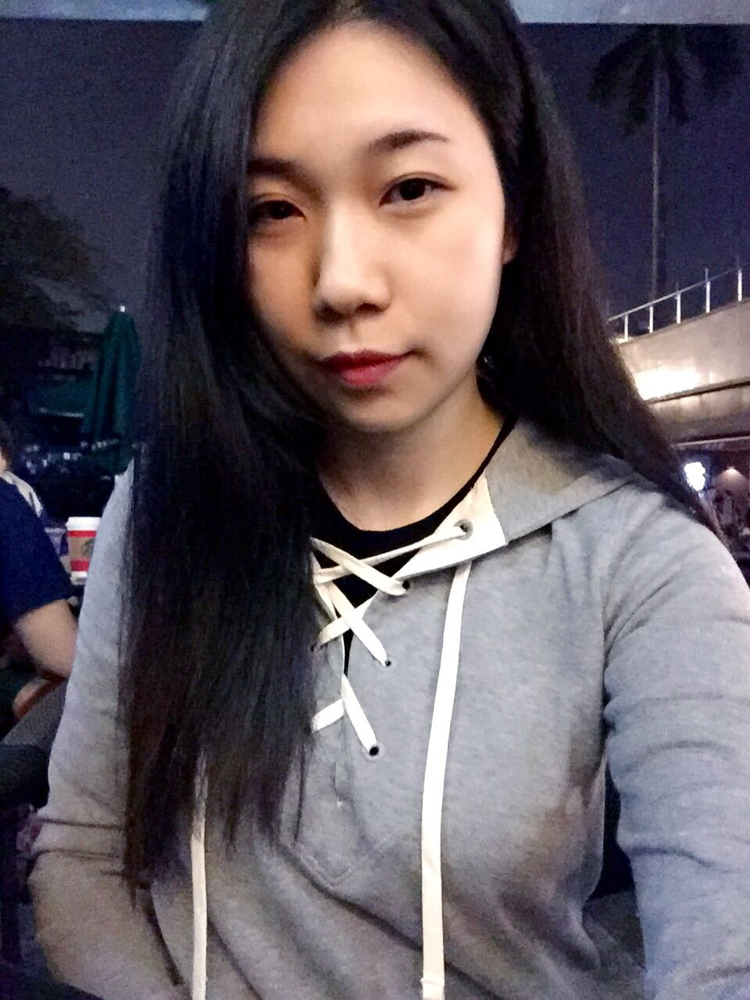
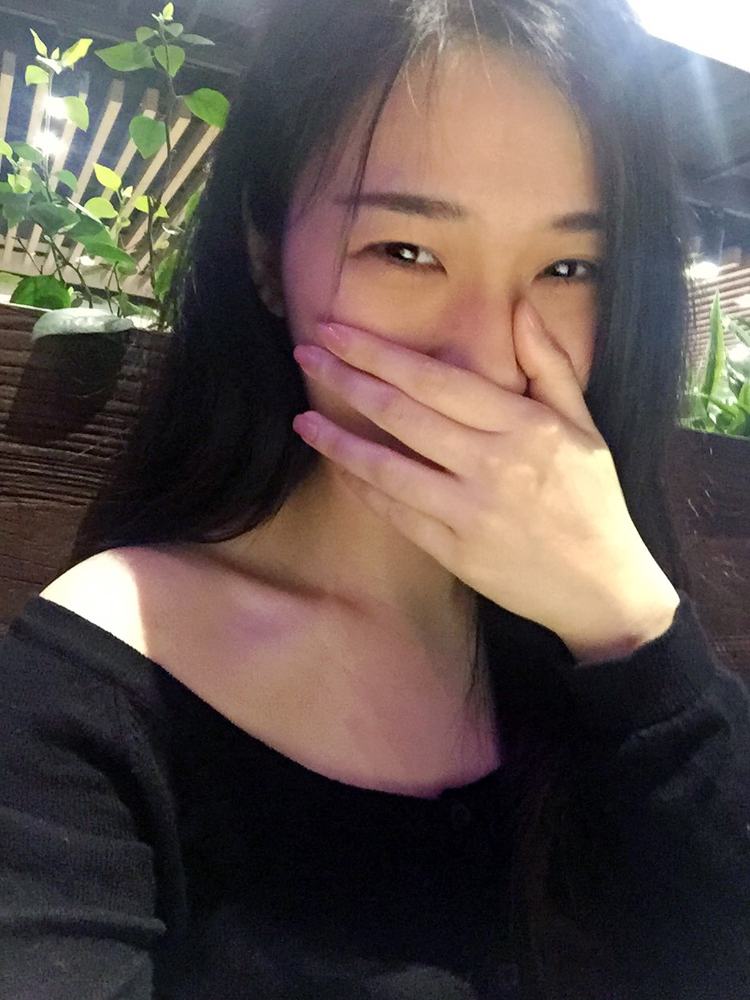

正文: 17.03.10更九(,,•́ . •̀,,)
给大家看看我的初中...
110的体重 和深圳胖起来的120还差10斤
分割线分割线分割线分割线分割线分割线分割线
深圳实习一个月 胖30斤的 你没看错 是30斤……
先给你们看看刚离开学校准备实习90的时候………
然后9月去了深圳实习
过了一个十二月之后…………
只有这两张照片了………
本人身高159 体重120
一月份的时候回家我妈妈都不认识我
就一个月疯狂长了30斤
现在想了想……
十二月的时候
每天都是暴饮暴食
吃撑了还在不停吃吃吃
对各种食物都超级渴望
一天中24小时都是很饱很饱的状态
晚上在宿舍自己一个人没事干的时候
就拼命吃饼干什么的（话说莱家的饼干虽然好吃 但可都是赤裸裸的脂肪啊 ）
唉 虽然我以前也110左右的体重
但是瘦了又变回去真的有一种自卑感产生啊
也不知道该怎么减下去了
开始自暴自弃不爱打扮了
出门上班什么的都很随便
天啊 我才22啊 和老太婆心态差不多了
救我啊………大神
08.08
答完后于07.10去健身房办了卡
瞎练习 跑步 单车 瑜伽跳舞
其实自己感觉是没有任何变化的
但是大家都说看上去瘦了好多
安慰我还是啥的吧哈哈
还没去多少次 刚开始的时候跑20分钟都觉得要了老子的命 现在60分钟不带累的
跑完步 跳了个舞之后拍的
希望赶紧赶紧变回原来的样子吧!!
10.01国庆泡温泉
体重105再接再厉~~
12.17
十一月开始就没有再去健身房了
最近天气冷了 吃得有点多 体重接近110
但是看上去并没有变化
大概是瓶颈了吧 这几个月都是105上下波动 没增加也没减少
上照片呗 貌似看上去是瘦了点 1212拍的 稍微调了一下颜色
希望能再瘦点点点点..(｡•ˇ‸ˇ•｡) …
02.20
过了一个年...
大家懂的....
110哎~夏天快要来了..
肿么办....
好想穿吊带短裤啊
好想穿比基尼泳衣啊
好想吃.....雪糕(ó﹏ò｡)
这三张都是过年期间拍的
159 110的人.,
肿起来的脸是没得救吗
为什么别人胖但是不胖脸不胖腿啊
为什么!!!!!为什么啊!!!!!!!!!!!!
04.10 体重100波动~~~~
诶!!!还有十斤就回去啦!!!!!!!
每天少吃点少吃点再少吃点
偶尔打打羽毛球的
早睡早睡!!!!
嘿嘿嘿~
看到锁骨窃笑窃笑好嗨森
✧*｡ (ˊᗜˋ*) ✧*｡
可是...
腿....还是...粗.....嗯嗯呵呵

05.16体重95啦~~
嘿嘿嘿,还有5斤~
没干什么,少吃点少吃点~
健身从11月就开始没有去了,
因为今年十月要回广州了,
前几天把健身卡转了,
真的得少吃,我运动比较少,
不过平时能站就不坐多走路~
耶耶耶~反正开心开心ヾ(≧∪≦*)ノ〃
不过....
矮和腿粗感觉是没有办法改变的
(´•̥ ̯ •̥`) ꉂ .......
6.16第七更啦
还是每天少吃少吃
体重和上月没太大区别
95到100波动
最近晚上很晚睡啊
累.,..
我好无趣吧哈哈哈哈
没什么说的.....
碎觉啦 晚安
8.24第八更
现在是平稳阶段了
体重90-95波动
想像原来那样持续90是不太可能了
因为要吃吃吃嘛
其实我也好像并没有太大的运动量
就去年7 8 9 10四个月健身房锻炼较多
现在基本都是少食多餐哒
个人很喜欢吃青菜 超级喜欢
油腻的 还有零食 现在都不吃了
平时出去玩出去吃饭也不会吃撑
控制住自己的嘴
照片好像变化也不太大了
意念呀意念!!!!!!
大家要相信!!!!!!!!!
瘦下去!!!!!!!就是美美哒!!!!!!!!!!!!!
好久没更新了 又过了差不多半年
从深圳回到了广州 家的怀抱
原以为会被我妈养养养胖 然而并没有咯
平时还是吃的不多啦 也可能因为我特喜欢吃青菜？？
以下照片是3月初和闺蜜们去温泉的照片
看我的脸我的脸！和胖的时候是不是简直两个性别！
还有我的腿我的腿！！！曾经我爸都说象腿也能有今天的马腿啊哎~~~加油啊胖子们！！瘦下来世界上所有的帅哥都是你们的了！！！！
另外..健身真的很重要 看我肚子那松松的肉...科科
我忙完这一段也得去办个健身卡了੭ ᐕ)੭*⁾⁾

感谢那些一直阅读的人~~~谢谢❤